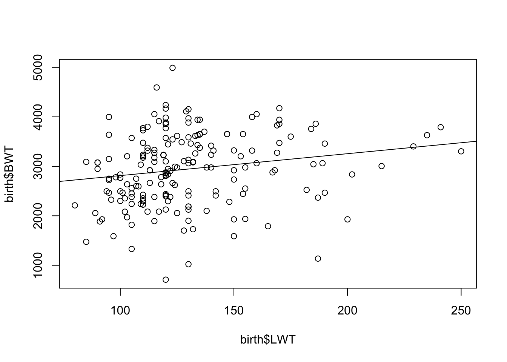
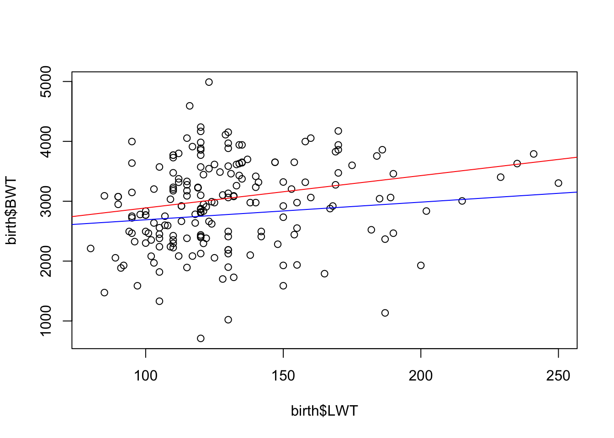
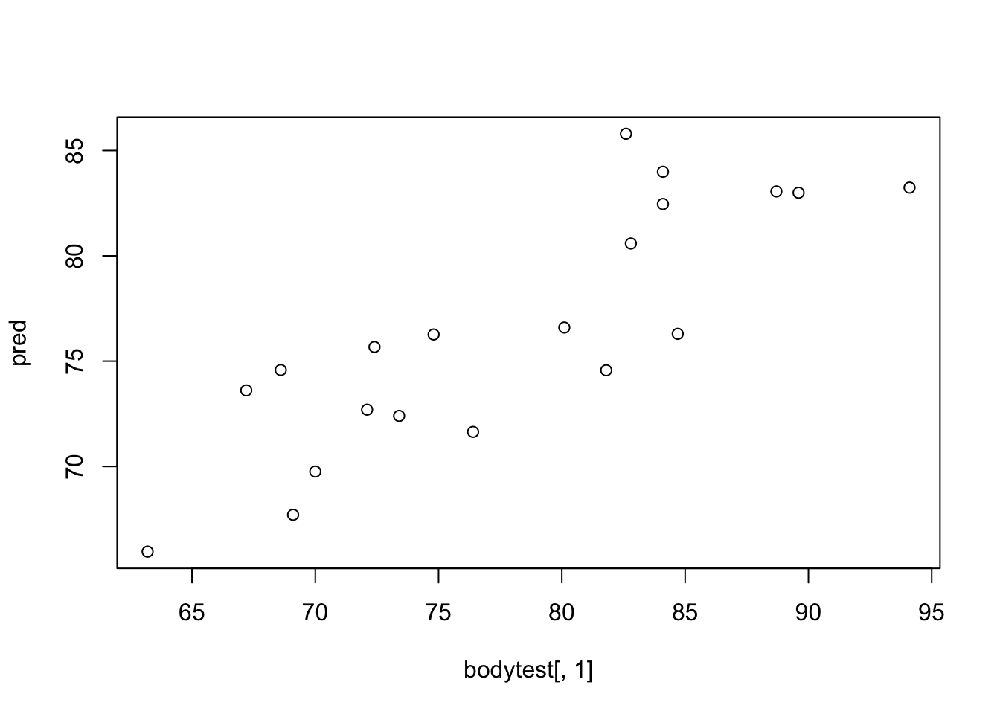

Exercise 1
Least Sqaures App
Play around with the least squares app on Play around with the least squares app on http://solve.shinyapps.io/LeastSquaresApp
- Use
N=10 - Try to adjust manually the intercept and the slope to minimize the sum of squared errors,
K. - Display the least square estimate to see how close you were.
- Display the true model. Were you close?
Once Again,
- Increase to
N=100 - Repeat the procedure.
- Are you closer to the true model now?
Birth Dataset
The dataset birth records 189 birth weights from Massachusetts, USA, and some additional variables. The variables are,
| Var | Description |
|---|---|
LOW |
Equals YES if birth weight is below 2500g and NO otherwise. |
AGE |
Age of the mother in years. |
LWT |
Weight in pounds of mother. |
SMK |
YES if mother smokes and NO otherwise. |
BWT |
Birth weight in g (RESPONSE). |
The data appears in fronter as birth.rdata. Download the data into your STAT340 course folder and load the data set in RStudio.
Overview of data
Take a look at the top 10 rows of the data using the head() function
head(birth) LOW AGE LWT SMK BWT
1 YES 28 120 YES 709
2 YES 29 130 NO 1021
3 YES 34 187 YES 1135
4 YES 25 105 NO 1330
5 YES 25 85 NO 1474
6 YES 27 150 NO 1588Use the summary() function to get a short summary of the variables.
summary(birth) LOW AGE LWT SMK BWT
NO :130 Min. :14.00 Min. : 80.0 NO :115 Min. : 709
YES: 59 1st Qu.:19.00 1st Qu.:110.0 YES: 74 1st Qu.:2414
Median :23.00 Median :121.0 Median :2977
Mean :23.24 Mean :129.8 Mean :2945
3rd Qu.:26.00 3rd Qu.:140.0 3rd Qu.:3475
Max. :45.00 Max. :250.0 Max. :4990 What is the proportion of smoking mothers in the data set?
The proportion of smoking mother is 0.39
What is the average age of a mother giving birth?
The average age of mother giving birth is 23.2 years.
What is the average birth weight of children from non-smoking and smoking mothers?
tapply(birth$BWT, INDEX = birth$SMK, FUN = mean) NO YES
3054.957 2773.243 The function returns the mean birth weight for children of non-smoking and smoking mothers.
What is the standard deviation of birth weight of children from non-smoking and smoking mothers?
tapply(birth$BWT, INDEX = birth$SMK, FUN = sd) NO YES
752.4090 660.0752 The sd() function computes the sample standard deviation of a vector of observations.
Linear Regression
Run a simple linear regression model with BWT as response and LWT as predictor, like this,
birth1 <- lm(BWT ~ LWT, data = birth)
summary(birth1)
Call:
lm(formula = BWT ~ LWT, data = birth)
Residuals:
Min 1Q Median 3Q Max
-2192.18 -503.63 -3.91 508.25 2075.53
Coefficients:
Estimate Std. Error t value Pr(>|t|)
(Intercept) 2369.672 228.431 10.374 <0.0000000000000002 ***
LWT 4.429 1.713 2.586 0.0105 *
---
Signif. codes: 0 '***' 0.001 '**' 0.01 '*' 0.05 '.' 0.1 ' ' 1
s: 718.2 on 187 degrees of freedom
Multiple R-squared: 0.03452,
Adjusted R-squared: 0.02935
F-statistic: 6.686 on 1 and 187 DF, p-value: 0.01048 Here, the regression model is,
\[\text{BWT} = \beta_0 + \beta_1 \text{LWT} + \epsilon\]
where \(\epsilon \sim N(0, \sigma^2)\)
Test the significance of LWT on BWT with a 5% test level and at a 1% level
What is the hypothesis you are testing?
The hypothesis for testing the significance of LWT on BWT is, \[ H_0: \beta_1 = 0 \text{ vs } H_1: \beta_1 \ne 0\]
The \(p\)-value corresponding to \(\beta_1\) is less than 0.05 but greater than 0.01. So, at 5% test level, LWT is significant while at 1% test level, it is not significant.
The r-squared (\(R^2\)) for the model is 0.03, this shows that only 3% of variation present in birth weight (BWT) is explained by weight of mother (LWD). Here, the model fits the data poorely.
Scatter Plot
Make a scatter plot of LWT vs BWT (Use the plot() function of LWT on the horizontal axis and BWT on the vertical axis. You may add the fitted linear model to your plot afterwards by applying the abline() function.)
The scatter plot of LWT and BWT is,
plot(x = birth$LWT, y = birth$BWT)
abline(birth1)
- The intercept for the regression line is 2369.67 and the slope is 4.43.
- The data-points are scattered around the regression line where BWT vary most
- Since the data-points are scattered much, the model could only explain small variation present in BWT with LWT.
Confidence Intervals
Find 95% confidence intervals for the regression coefficients of thebirth1 model
confint(birth1) 2.5 % 97.5 %
(Intercept) 1919.039836 2820.3043
LWT 1.049927 7.8086confint(birth1, level = 0.99) 0.5 % 99.5 %
(Intercept) 1775.20974036 2964.134385
LWT -0.02866992 8.887197- It is 95% certain that the interval (1.05, 7.809) covers the true \(\beta_1\). Similary, it is 99% certain that the interval (-0.029, 8.887) covers the true \(\beta_1\).
- The 99% confidence is larger than 95% confidence. In other words, being more certain about the true value needs larger confidence interval.
- Moreover, the 95% does not include zero while 99% interval includes zero. This is equivalent with the result that \(\beta_1\) cofficient is significant at a 5% test level, but not significant at a 1% test level.
Regression with categories
Here we will fit a separate regression for smoking and non-smoking groups. You can identify the observation numbers of the smokers by:
smokeYes <- which(birth$SMK == "YES")birth1, but separate models for non-smokers and smokers, and call the models birth2 and birth3. (Hint: select observations by the subset argument in the lm-function using the smokeYes variable.)
birth2 <- lm(BWT ~ LWT, data = birth, subset = -smokeYes)
birth3 <- lm(BWT ~ LWT, data = birth, subset = smokeYes)Interpreate these models
Make a scatter plot of LWT vs BWT and add two fitted lines form the model fitted above.(Use theabline() function to add the two fitted lines to the same plot, but use “red” and “blue” as colors.)
plot(x = birth$LWT, y = birth$BWT)
abline(birth2, col = "red")
abline(birth3, col = "blue")
Fitted lines for both non-smokers and smokers seems very similar, but it is difficult to tell whether they are significantly different. We will later se how we can model both mother-groups simultaneously and be able to test this difference.
Is LWT significant at a 5% level on BWT for the smokers?
summary(birth3)
Call:
lm(formula = BWT ~ LWT, data = birth, subset = smokeYes)
Residuals:
Min 1Q Median 3Q Max
-2040.25 -416.25 33.92 472.18 1488.75
Coefficients:
Estimate Std. Error t value Pr(>|t|)
(Intercept) 2395.373 301.474 7.946 0.0000000000194 ***
LWT 2.949 2.276 1.296 0.199
---
Signif. codes: 0 '***' 0.001 '**' 0.01 '*' 0.05 '.' 0.1 ' ' 1
s: 657 on 72 degrees of freedom
Multiple R-squared: 0.02279,
Adjusted R-squared: 0.009213
F-statistic: 1.679 on 1 and 72 DF, p-value: 0.1992 The hypothesis for testing the significance of LWT is, \[H_0: \beta_1 = 0 \text{ vs } H_1: \beta_1 \ne 0\] From the summary of model birth3 above, p-value corresponding to LWT is higher than 0.05 and we fail to reject \(H_0\), which suggests that LWT is not significant for smokers group. In other words, LWT does not have any linear relationship with BWT at 95% confidence level for smokers group.
Assume a model with both LWT and AGE as predictors for BWT using all observations.
Write up the model and the model assumptions.
\[\text{BWT} = \beta_0 + \beta_1 \text{LWT} + \beta_2 \text{AGE} + \epsilon\]
Assumptions:
The error term \(\epsilon\) follows \(N(0, \sigma^2) \; iid\), i.e error terms are independently normally distributed with mean 0 and constant variance \(\sigma^2\).
What is the interpretation of the regression coefficients?
- \(\beta_1\) gives the expected amount of change in BWT for unit change in LWT when AGE is held constant, i.e. if LWT increases by 1 pound, BWT will increase by \(\beta_1\) grams for people of the same AGE.
- \(\beta_2\) gives the expected amount of change in BWT (in grams) if AGE increase by 1 year and LWT is held constant.
Fit the model in RStudio, call it birth4 and comment on the results.
birth4 <- lm(BWT ~ LWT + AGE, data = birth)
summary(birth4)
Call:
lm(formula = BWT ~ LWT + AGE, data = birth)
Residuals:
Min 1Q Median 3Q Max
-2232.84 -500.50 32.13 520.32 1899.26
Coefficients:
Estimate Std. Error t value Pr(>|t|)
(Intercept) 2215.760 299.238 7.405 0.00000000000443 ***
LWT 4.179 1.743 2.397 0.0175 *
AGE 8.021 10.060 0.797 0.4263
---
Signif. codes: 0 '***' 0.001 '**' 0.01 '*' 0.05 '.' 0.1 ' ' 1
s: 718.9 on 186 degrees of freedom
Multiple R-squared: 0.03781,
Adjusted R-squared: 0.02746
F-statistic: 3.654 on 2 and 186 DF, p-value: 0.02776 The summary output shows that LWT is significant at 5% level of significance but not at 1%. AGE has very high p-value and thus is not significant, i.e. there is not any linear relationship of AGE with BWT. The explained variation is still very low with an \(R^2=0.038\).
Optional:
Look at the presentation file Regression.Rmd from lecture 2 and produce for the birth4-model a similar 3D-plot as on page 15. You may need to install the R-packages: rgl, nlme, mgcv and car first. Use the figure to get an understanding of the effects of LWT and AGE on BWT.
A 3D plot
library(scatterplot3d)
with(birth, {
# Start Plot
plot3d <- scatterplot3d(LWT, AGE, BWT, type = "p", highlight.3d = TRUE,
mar = c(3, 3, 2, 3), pch = 19, cex.symbols = 0.5,
main = "Residuals and fitted plane for model: birth4",
angle = 45, box = FALSE)
# Add fitted plane for model birth4
plot3d$plane3d(birth4, col = "grey50", lty.box = "solid", polygon_args = list(bg = "lightgrey"))
# True Values
true <- plot3d$xyz.convert(LWT, AGE, BWT)
# Predicted Values
fitted <- plot3d$xyz.convert(LWT, AGE, fitted(birth4))
# Is the residuals negative?
neg_res <- 1 + (resid(birth4) > 0)
# Add segment for the residuals
segments(true$x, true$y, fitted$x, fitted$y, col = c("blue", "red")[neg_res])
})Scatter3D
An interactive 3D plot
library(car)
scatter3d(BWT ~ LWT + AGE, data = birth, axis.ticks = TRUE, revolutions = 1)For grouped: Smoking vs Non-Smoking:
car::scatter3d(BWT ~ LWT + AGE, data = birth, axis.ticks = TRUE,
revolutions = 1, groups = birth$SMK)Interpretation
What is the interpretation of the estimated regression coefficients for LWT and AGE in this model?From the summary output of birth4 model, the \(\beta\) coefficient for LWT is 4.179 and AGE is 8.021. This shows that, if weight of mother (LWT) increases by 1 pound, the birth weight (BWT) is estimated to increase by 4.179 grams if AGE is held constant. Similary, if the age of a mother (AGE) increases by 1 year, the birth weight (BWT) is estimated to increase by 8.021 grams, if LWT is held constant. The regression coefficients are therefore equal to the slopes of the gridlines of the surface in the figure.
Bodydata
Training Samples
Create a training data set called bodytrain containing the first 20 observations only, by:
bodytrain <- bodydata[1:20,]Fitting Model
Fit one at a time three simple regression models with Weight as response and each of Height, Age and Circumference as predictors, name the models Model1, Model2 and Model3, respectively. Use the summary() function on each model to print out a summary of the fitted models. Use the first 20 observations as your training data.
model1 <- lm(Weight ~ Height, data = bodytrain)
model2 <- lm(Weight ~ Age, data = bodytrain)
model3 <- lm(Weight ~ Circumference, data = bodytrain)Understanding the fitted Model
Test whether the three predictors are significant. Use a 5% test level.The summary result for model1 is,
summary(model1)
Call:
lm(formula = Weight ~ Height, data = bodytrain)
Residuals:
Min 1Q Median 3Q Max
-11.5160 -2.5964 0.0261 2.9141 11.7454
Coefficients:
Estimate Std. Error t value Pr(>|t|)
(Intercept) -38.2310 38.3605 -0.997 0.33216
Height 0.6386 0.2123 3.007 0.00757 **
---
Signif. codes: 0 '***' 0.001 '**' 0.01 '*' 0.05 '.' 0.1 ' ' 1
s: 5.839 on 18 degrees of freedom
Multiple R-squared: 0.3344,
Adjusted R-squared: 0.2974
F-statistic: 9.043 on 1 and 18 DF, p-value: 0.007566 Here, at 5% test level, Height is significant (p-value for Height is less than 0.05). The summary result for model2 is,
summary(model2)
Call:
lm(formula = Weight ~ Age, data = bodytrain)
Residuals:
Min 1Q Median 3Q Max
-15.0839 -3.9176 0.8978 4.2513 12.4386
Coefficients:
Estimate Std. Error t value Pr(>|t|)
(Intercept) 80.7448 14.5625 5.545 0.000029 ***
Age -0.1592 0.6253 -0.255 0.802
---
Signif. codes: 0 '***' 0.001 '**' 0.01 '*' 0.05 '.' 0.1 ' ' 1
s: 7.144 on 18 degrees of freedom
Multiple R-squared: 0.003587,
Adjusted R-squared: -0.05177
F-statistic: 0.06481 on 1 and 18 DF, p-value: 0.8019 Here, at 5% test level, Age is not significant (p-value for age is greater than 0.05). Finally, the summary result for model3 is,
summary(model3)
Call:
lm(formula = Weight ~ Circumference, data = bodytrain)
Residuals:
Min 1Q Median 3Q Max
-8.937 -3.540 0.038 2.956 8.659
Coefficients:
Estimate Std. Error t value Pr(>|t|)
(Intercept) 3.6737 17.1036 0.215 0.832343
Circumference 0.9137 0.2125 4.300 0.000431 ***
---
Signif. codes: 0 '***' 0.001 '**' 0.01 '*' 0.05 '.' 0.1 ' ' 1
s: 5.027 on 18 degrees of freedom
Multiple R-squared: 0.5067,
Adjusted R-squared: 0.4793
F-statistic: 18.49 on 1 and 18 DF, p-value: 0.0004311 Here, at 5% test level, Circumference is significant (p-value for circumference is less than 0.05).
The model with Circumference as predictor has highest \(R^2\) among the models. This model explains 50.67 percent of variation present in the response Weight.
Compute the correlation matrix of the bodydtrain data by:
cormat <- cor(bodytrain)You can square the correlations by:
cormat ^ 2 Weight Height Age Circumference
Weight 1.000000000 0.334400375 0.003587475482 0.506712708016
Height 0.334400375 1.000000000 0.001672757208 0.061161161867
Age 0.003587475 0.001672757 1.000000000000 0.000004216559
Circumference 0.506712708 0.061161162 0.000004216559 1.000000000000Weight column with the R-squared values from the three models.
The square of correlation between each predictor variable with response is equals to the \(R^2\) obtained in model1, model2 and model3. However, this only applies to simple regression with one predictor.
If we “predict” the same observations as was used to fit the model, we get the so-called fitted values. These can be retrieved from the model1 by model1$fitted.values
Compute the squared correlations between the weights of bodytrain and the fitted values of model1.
cors <- cor(bodytrain[ , 1], model1$fitted.values)
cors ^ 2[1] 0.3344004model1
The square of correlation between the fitted values from a model with the response is equal to the \(R^2\) obtained from the model. This is a result which extends to multiple regression.
By applying the anova() function to each model object we obtain the analysis of variance tables containing the MSE, i.e. the Mean Sum of Squares of the Error (Residuals), which is the estimator for the error variance.
anova(model1)Analysis of Variance Table
Response: Weight
Df Sum Sq Mean Sq F value Pr(>F)
Height 1 308.31 308.313 9.0433 0.007566 **
Residuals 18 613.67 34.093
---
Signif. codes: 0 '***' 0.001 '**' 0.01 '*' 0.05 '.' 0.1 ' ' 1anova(model2)Analysis of Variance Table
Response: Weight
Df Sum Sq Mean Sq F value Pr(>F)
Age 1 3.31 3.308 0.0648 0.8019
Residuals 18 918.68 51.038 anova(model3)Analysis of Variance Table
Response: Weight
Df Sum Sq Mean Sq F value Pr(>F)
Circumference 1 467.18 467.18 18.49 0.0004311 ***
Residuals 18 454.80 25.27
---
Signif. codes: 0 '***' 0.001 '**' 0.01 '*' 0.05 '.' 0.1 ' ' 1Model 3 has the smallest error variance estimate. We can also obtain the error variance estimate using the “Residual standard error” from the summary output since, \(MSE = s^2\).
Multiple Linear Regression and Prediction
Fit a model 4 with both Height and Circumference as predictors.
model4 <- lm(Weight ~ Height + Circumference, data = bodytrain)
summary(model4)
Call:
lm(formula = Weight ~ Height + Circumference, data = bodytrain)
Residuals:
Min 1Q Median 3Q Max
-5.3189 -3.5363 -0.7817 2.8028 6.3974
Coefficients:
Estimate Std. Error t value Pr(>|t|)
(Intercept) -70.8202 28.4518 -2.489 0.023464 *
Height 0.4731 0.1566 3.021 0.007698 **
Circumference 0.7777 0.1820 4.273 0.000515 ***
---
Signif. codes: 0 '***' 0.001 '**' 0.01 '*' 0.05 '.' 0.1 ' ' 1
s: 4.172 on 17 degrees of freedom
Multiple R-squared: 0.679,
Adjusted R-squared: 0.6413
F-statistic: 17.98 on 2 and 17 DF, p-value: 0.0000638 Get test observations for prediction: (Make a test data set called bodytest containing observations 21:40 (Hint: Check how we made bodytrain above))
bodytest <- bodydata[21:40, ]model4 to predict the Weights of the testdata.
pred <- predict(model4, newdata = bodytest)plot(bodytest[ , 1], pred)
Compute the squared correlation between the actually observed Weights and the predicted weights.
cor(pred, bodytest[ , 1]) ^ 2[1] 0.7137211What you get here is a so-called “prediction R-squared” of this model.
Compare with the R-squared ofmodel4
The prediction R-squared is close to the R-squared of model4 (0.679) which indicates that the results from model4 generalize well to new observations.
Extra on R-squared
In statistics we aim at finding models which fit the data well. However, the R-squared may easily lead to overfitting of models, that is by including too many variables.
**Fit a model with all three predictors to the bodytrain data:**
model5 <- lm(Weight ~ Height + Circumference + Age, data = bodytrain)
summary(model5)
Call:
lm(formula = Weight ~ Height + Circumference + Age, data = bodytrain)
Residuals:
Min 1Q Median 3Q Max
-5.4088 -3.3900 -0.9123 3.0403 6.9827
Coefficients:
Estimate Std. Error t value Pr(>|t|)
(Intercept) -66.5785 30.0098 -2.219 0.041330 *
Height 0.4768 0.1600 2.981 0.008831 **
Circumference 0.7769 0.1858 4.181 0.000706 ***
Age -0.2094 0.3731 -0.561 0.582352
---
Signif. codes: 0 '***' 0.001 '**' 0.01 '*' 0.05 '.' 0.1 ' ' 1
s: 4.259 on 16 degrees of freedom
Multiple R-squared: 0.6852,
Adjusted R-squared: 0.6262
F-statistic: 11.61 on 3 and 16 DF, p-value: 0.0002729 Lets add some randomly generated junk from a normal distribution
Junk1 <- rnorm(n = 20, mean = 0, sd = 10)
Junk2 <- rnorm(20, 0, 10)
Junk3 <- rnorm(20, 0, 10)
model6 <- lm(Weight ~ Height + Circumference + Age +
Junk1 + Junk2 + Junk3, data = bodytrain)
summary(model6)
Call:
lm(formula = Weight ~ Height + Circumference + Age + Junk1 +
Junk2 + Junk3, data = bodytrain)
Residuals:
Min 1Q Median 3Q Max
-4.899 -2.936 -1.176 2.956 6.472
Coefficients:
Estimate Std. Error t value Pr(>|t|)
(Intercept) -45.21104 34.42108 -1.313 0.21173
Height 0.37156 0.18504 2.008 0.06589 .
Circumference 0.77853 0.23841 3.265 0.00614 **
Age -0.32771 0.41016 -0.799 0.43866
Junk1 -0.15687 0.13940 -1.125 0.28080
Junk2 0.16415 0.13669 1.201 0.25122
Junk3 -0.07714 0.13614 -0.567 0.58065
---
Signif. codes: 0 '***' 0.001 '**' 0.01 '*' 0.05 '.' 0.1 ' ' 1
s: 4.344 on 13 degrees of freedom
Multiple R-squared: 0.734,
Adjusted R-squared: 0.6112
F-statistic: 5.978 on 6 and 13 DF, p-value: 0.003455 Exercises
Compare models 5 and 6. What happens to the R-squared? (Compare also the adjusted R-squared values for models 5 and 6.)The results will vary from time to time since we sample random junk, but in general we will observe that R-squared increase, whereas the adjuste R-squared decrease as we add more junk variables.
Junk4, Junk5 and Junk6.
Junk4 <- rnorm(n = 20, mean = 0, sd = 10)
Junk5 <- rnorm(20, 0, 10)
Junk6 <- rnorm(20, 0, 10)
model6 <- lm(Weight ~ Height + Circumference + Age + Junk1 + Junk2 + Junk3 +
Junk4 + Junk5 + Junk6, data = bodytrain)
summary(model6)
Call:
lm(formula = Weight ~ Height + Circumference + Age + Junk1 +
Junk2 + Junk3 + Junk4 + Junk5 + Junk6, data = bodytrain)
Residuals:
Min 1Q Median 3Q Max
-4.471 -2.067 1.039 1.923 4.337
Coefficients:
Estimate Std. Error t value Pr(>|t|)
(Intercept) -94.53920 34.61011 -2.732 0.02114 *
Height 0.61173 0.19013 3.217 0.00922 **
Circumference 0.78183 0.20054 3.899 0.00297 **
Age -0.07007 0.34876 -0.201 0.84480
Junk1 0.08223 0.16526 0.498 0.62955
Junk2 -0.02088 0.14686 -0.142 0.88975
Junk3 0.04883 0.13228 0.369 0.71971
Junk4 -0.29641 0.11810 -2.510 0.03092 *
Junk5 0.16262 0.12798 1.271 0.23263
Junk6 -0.04694 0.08255 -0.569 0.58216
---
Signif. codes: 0 '***' 0.001 '**' 0.01 '*' 0.05 '.' 0.1 ' ' 1
s: 3.552 on 10 degrees of freedom
Multiple R-squared: 0.8632,
Adjusted R-squared: 0.74
F-statistic: 7.01 on 9 and 10 DF, p-value: 0.002688 Observe the R-squared values(What is the lesson to be learned here?)
Adding variables and only observing R-squared may be misleading. We should at least also keep in mind that a simple model is better. Hence, if adding more variables does not increase R-squared very much, we should keep the simpler model. If in addition the difference between the R-squared and the adjusted R-squared starts to get large, it is a clear indicator of overfitting.